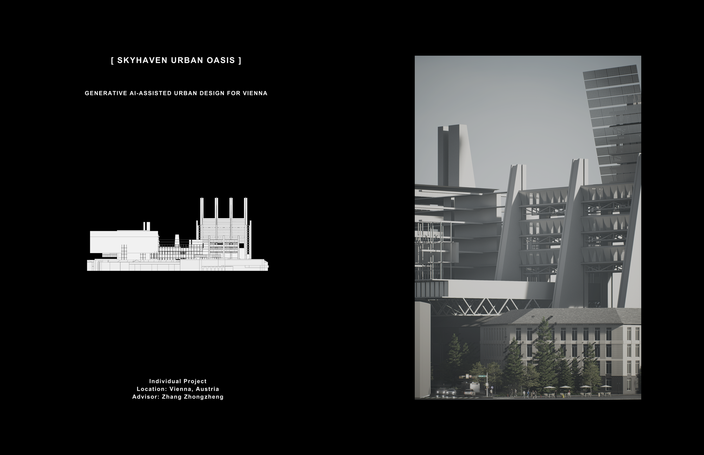
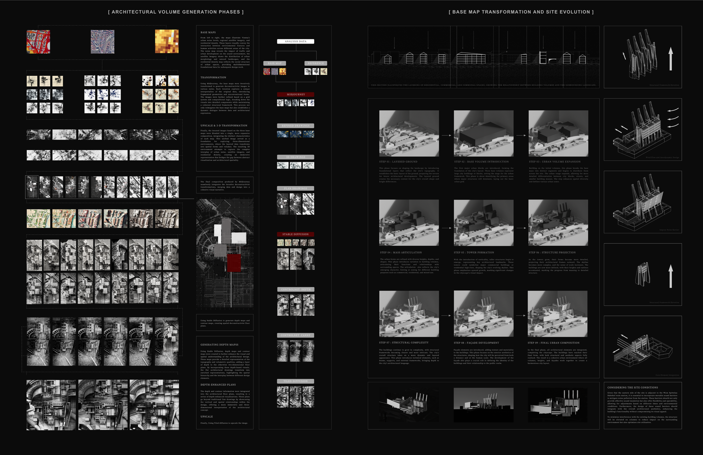
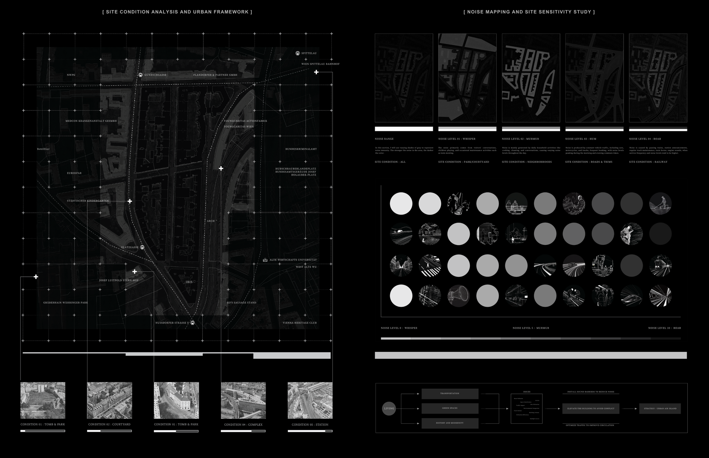
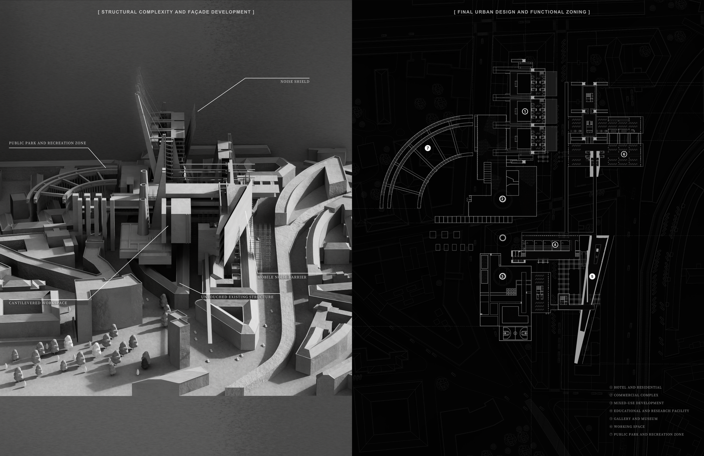
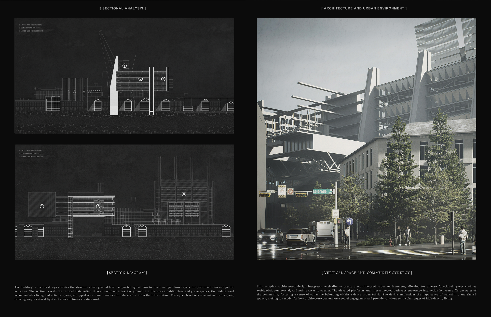

Skyhaven Urban Oasis is a generative, AI-assisted housing study for Vienna that asks how a city’s existing fabric can seed entirely new forms of density. The project begins from three layered base maps — Vienna’s urban scene, regional satellite imagery, and the extreme density of Manhattan — read together so that environmental features and human activity register across every zone of the site.
Skyhaven 是一项面向维也纳的生成式、AI 辅助住宅研究，追问城市既有肌理如何孕育全新的密度形态。项目以三张叠合底图为起点——维也纳城市景象、区域卫星影像与曼哈顿级密度——三者并置，使环境特征与人类活动在场地各区域中同时显现。
Using Midjourney, these base maps are iteratively transformed into deconstructivist images at multiple scales, then disciplined against a compositional grid — a non-Euclidean language held within a coherent structural framework. The three maps are blended into a single dense composition and pushed into three dimensions, where depth maps translate the imagery into spatial relationships — a vertical-and-horizontal density that bridges abstract AI visualization and built architectural space.
借助 Midjourney，这些底图被多尺度地迭代成解构主义图像，再以网格化构成逻辑加以约束——一种被连贯结构框架所统御的“非欧几里得”语言。三张图最终合成为一张高密度构图并升维至三维，深度图将图像转译为空间关系——形成横纵交织的密度，连接抽象的 AI 视觉与真实的建筑空间。




